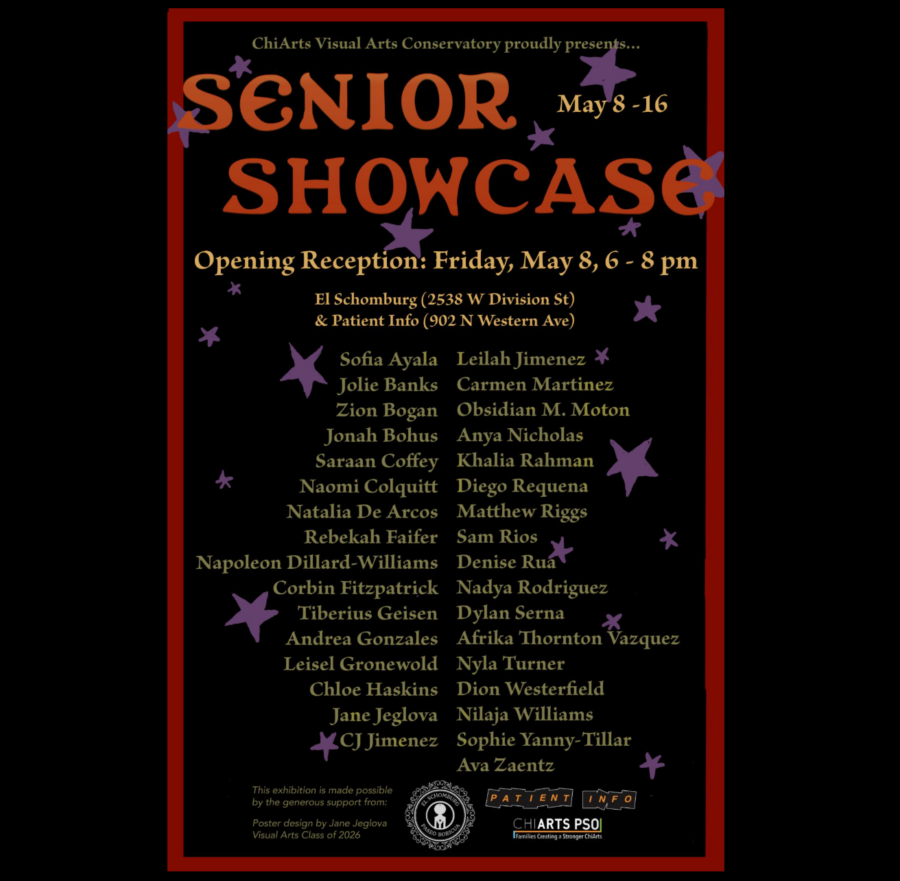

ChiArts Senior Showcase 2026
One half of this year’s ChiArts Senior Showcase will be at Patient Info! Join us this Friday 5/8 from 6:00 – 8:00 PM for the opening reception. The other half of the showcase will be on view at El Schomburg (2538 W Division St) @elschomburg so be sure to check that out as well.
The ChiArts Senior Showcase is the culminating exhibition of original artworks from each graduate’s year-long thesis or concentration investigation, highlighting their work in drawing, painting, photography, sculpture, and visual communication. Hosted annually, this showcase serves as the final exhibition of a Visual Arts student’s high school career, often featuring work in various mediums.